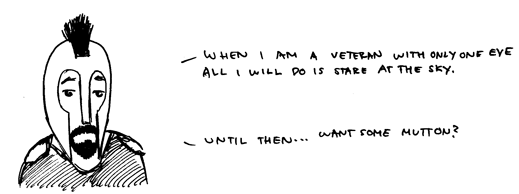

These Be The Burnt Fens.

About the strip: Started in early 2008, the Burnt Fen Maunderings is mostly a strip about what it is about. It updates on the days of the Moon, Odin, and Freya (Mondays, Wednesdays, and Fridays), unless of course the author has a massive cerebral infraction on any of those days, in which case there will be a filler or an apology. The characters are few, and mostly recurring: a bald, beardless guy, who sometimes identifies with the author, who has glasses; a bearded guy, who identifies with the author's better side; a cyclops; a sheep head; random historical figures; the professor, with a goatee and a monocle; and the girl, with chopsticks in her hair, for some reason. We blame the author for loving Japan.
About the author: Richard Littauer, sometimes known as Richard Fenn, writes this thing. All of it. Code, blog, comic. He also draws, which is unfortunate. He makes obscure references in life just as on here, and doesn't seem to understand that no one likes them but himself. Gene Wolfe would say that he enjoys "obtaining those real though impalpable satisfactions, sweet at any time, but sweetest at thirteen, which accrue when we appear knowledgeable and thus, at least by implication, effective." He is not in fact thirteen, but twenty one. He lives in Edinburgh, Scotland, is a Yank by nationality, and was raised in Connecticut, near Hartford. He attends the University of Edinburgh, doing a degree in Linguistics. He has brown hair, and has weened himself from wearing emo glasses. Sometimes he fancies himself an artist, other times a writer, most of the time an idiot. His interests are myriad. That's probably all there is to say about him.
About the name: Originally, the site was hosted at www.fenne.co.uk, because I loved the word fenn (for a variety of reasons, not all phonetic), and found one day, browsing through my OED, that fenne is an old word for dragon. Couk turned out to be an old spelling of coke, and so Dragon Ash was born. But I couldn't keep that name, as I didn't want to get into copyright issues with a Japanese Hip Hop Band (of all of the things I could have chosen to vie with, that was a good choice.) I went back to the phragmites roots, and found out that fenne is Old Frisian (an awesome language, if only for the name) for fen. Burnt Marsh, Marsh Coal, Marsh Arsh - again, more to mind. I thought I had hit the clov on the ham when I ran into Fen-Fire and Ignis Fatuus - Two names for Will of the Wisps. But those are taken elsewhere, and again, I don't want to run into copyright issues. Of course, the sound of the word fen is partly why I chose the name in the first place: probably one of my favourite sounding words, along with fell, which also has a variety of meanings. So I decided not to go for variants, like slough (too much Bunyan, too little onion) or bog - so fen. And, having wiki'd Burnt Fen, I ran across an article, which claims that "Burnt Fen is said to take its name from having been burnt by Hereward the Wake." That is pretty much the most awesome awesome ever. I mean, a fen that has been burnt down (note the significance in burnt: has to deal with both couk, inherent in .co.uk, and the actually meaning for fenne, being, of course, dragon) by a guy whose surname is only the Wake, from whom some Robin Hood stories are drawn, an Anglo Saxon outlaw and opposition leader. That is exactly the vein I was looking for. So, I subsequently chose the name "The Burnt Fen Maunderings."
Why 'Maunderings?' Well, I want this comic to wander, to deal with many issues I find relevant to life, mostly humorous, but also to cover depression, love, and most of all, history and nature. As a young child, wandering in or near marshes was one of my favourite things to do. To maunder is the perfect word for this: it means to talk in a rambling, foolish, or meaningless way, as well as to wander aimlessly and confused. I also love the progressive form, and the definite article, so, The Burnt Fen Maunderings it is. If you want, call it Burnt Fen - I don't mind. Call it Dragon Ash, if you like. Don't bother me none. I am content.
About older blog posts: If you catch yourself wondering what happens to old blog posts, they can be found here.
-----